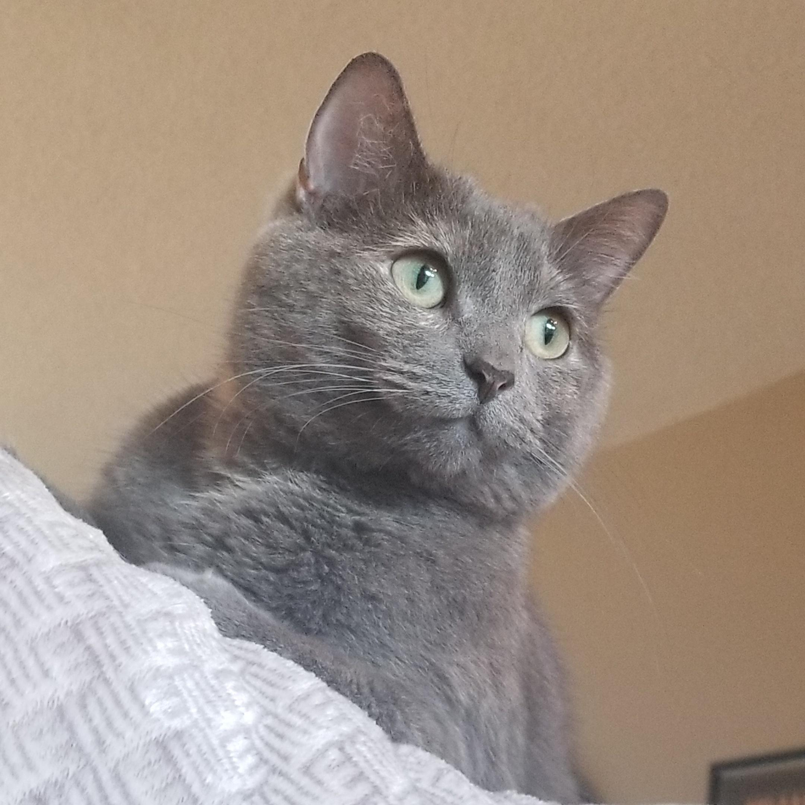

Porkchop Special

Description
This cat food recipe is named after my own cat, Porkchop (pictured) and contains... you guessed it! Pork! Pork is a great source of protein
for your kitty. Just try to stick to a lean cut. Too much fat isn't good for your kitty. The sweet potatoes are high in antioxidants antioxidants
and fiber, and the secret ingredient, safflower oil, is packed with healthy fats and fatty acids, which will help keep your cats coat silky and shiny,
and their skin healthy and moisturized. Soon enough, your cat might be (almost) as gorgeous as my Porky!
Ingredients
- 80g pork (avoid fatty pork like jowl, neck, or ribs)
- 50g wild rice
- 30g sweet potato
4g safflower oil
Steps
- Cook the pork in the oven, without seasoning. Cut into small, bite sized pieces
-
In medium saucepan, combine 1 part wild rice to 4 parts water. Cook until rice is soft but not mushy and until most of the grains have popped, about 45 minutes. Once done to desired softness,
drain excess water and fluff rice.
-
Peel sweet potatoes and cut into 1 inch chunks. Fill a large pot with enough water to cover the potatoes by about 2 inches. Bring to boil, add potatoes, and reduce heat and keep to a slow boil throughout
cooking. Cook until easily pierced with a fork, about 15 minutes. Mash or cut into smaller, cat-sized chunks when done.
- Combine all ingredients